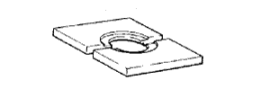
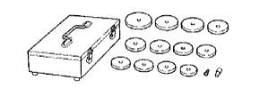
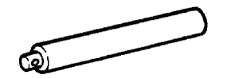
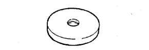
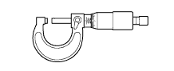

Transfer Assembly (4WD) Preparation [Reassembly]
| 09316-12010 | Transfer Bearing Replacer | |
 | 09316-60011 | Transmission & Trans fer Bearing Replacer |
 | (09316-00011) | Replacer Pipe |
 | 09336-16010 | Transmission Gear Tool |
 | 09506-30012 | Differential Drive Pinion Rear Bearing Cone Replacer |
 | 09905-00012 | Snap RingNo.1 Expander |
 | 09950-60010 | Replacer Set |
 | (09951-00400) | Replacer 40 |
| (09951-00440) | Replacer 44 | |
| (09951-00540) | Replacer 54 | |
| (09951-00560) | Replacer 56 | |
| (09951-00620) | Replacer 62 | |
| (09951-00650) | Replacer 65 | |
 | (09952-06010) | Adapter |
 | 09950-60020 | Replacer SetNo.2 |
| (09951-00680) | Replacer 68 | |
| (09951-00750) | Replacer 75 | |
| (09952-06010) | Adapter |
 | 09950-70010 | Handle Set |
 | (09951-07150) | Handle 150 |
 | 09951-00850 | Replacer 85 |
 | 09010-3C100 | Hexagon Wrench Set |
 | (09013-6C130) | Socket Hexagon 10mm |
| 09011-2C590 | Socket Wrench 30mm/12p | |
 | 09051-1C110 | Plastic-faced Hammer |
 | 09072-1C200 | Vernier Caliper 150mm |
| Chisel | ||
 | 2046-08 | Dial Indicator (10mm) Supplied by Banzai Ltd. |
 | 25MB | Micrometer Measuring Range: 0 to 25mm Supplied by Banzai Ltd. |
| M110-25 | Micrometer Measuring Range 0 to 25mm Supplied by Iyasaka Co., Ltd. | |
| TM-110 | Dial Indicator (10mm) Supplied by Iyasaka Co., Ltd. |
 | MB-B | Magnetic Base Supplied by Banzai Ltd. and Iyasaka Co., Ltd. |
 | QL-25N | QL Torque Wrench (25N) Supplied by Banzai Ltd. and Iyasaka Co., Ltd. |
| QL-420N | QL Torque Wrench (420N) Supplied by Banzai Ltd. and Iyasaka Co., Ltd. |
| QL-50N | QL Torque Wrench (50N) Supplied by Banzai Ltd. and Iyasaka Co., Ltd. |
 | SF1.5N | F-type Torque Wrench (1.5N·m) Supplied by Banzai Ltd. and Iyasaka Co., Ltd. |
| SF3N | F-type Torque Wrench (3N·m) Supplied by Banzai Ltd. and Iyasaka Co., Ltd. |
| Toyota Genuine MP GreaseNo.2 | ||
| Toyota Genuine Hypoid Gear Oil SX | ||
| White Gasoline | ||
| Prussian Blue | ||
| Seal Packing1281 V93500111 Supplied by Tacti Corporation | ||
 | (09612-10061) | Steering Pinion Bearing Replacer |